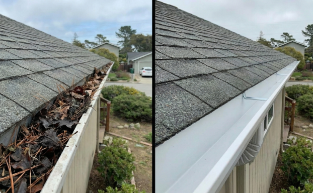
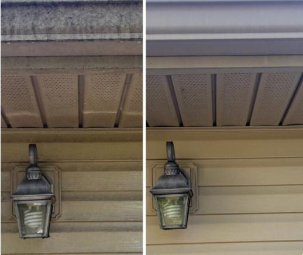

Gutter Brightening (Oxidation Removal)
Restore your gutters to a like‑new appearance by removing oxidation, tiger stripes, and discoloration caused by Florida humidity and roof runoff.
Professional Gutter Brightening for Jacksonville Homes
Gutter brightening is a cosmetic cleaning process that removes oxidation and “tiger stripes” — the dark vertical streaks that form on gutter faces. These stains cannot be removed with normal gutter cleaning or pressure washing. We use professional oxidation removers and soft‑wash techniques to safely restore the gutter’s original color without damaging paint or finish.

How Our Gutter Brightening Process Works
We follow a safe, effective process to remove oxidation and restore your gutter’s original shine.
- 1. Surface Inspection — We identify oxidation, tiger stripes, and discoloration.
- 2. Chemical Application — A professional oxidation remover is applied to break down bonded stains.
- 3. Soft‑Wash Treatment — Low‑pressure cleaning ensures no damage to paint or gutter finish.
- 4. Hand Scrubbing — Stubborn tiger stripes are scrubbed manually for maximum restoration.
- 5. Rinse & Shine — Gutters are rinsed clean and restored to their original color.
- 6. Before & After Photos — You receive photos showing the transformation.

Tools & Products Used for Gutter Brightening
We use professional-grade products designed specifically for oxidation removal.
- Oxidation remover — Breaks down bonded tiger stripe stains.
- Soft‑wash sprayer — Low pressure to protect gutter paint.
- Hand scrub brushes — For stubborn oxidation spots.
- Extension poles — Reach high gutter faces safely.
- Rinse system — Leaves gutters clean and streak‑free.
Why Gutter Brightening Matters in Jacksonville
Jacksonville’s humidity, rain, and roof runoff cause dirt and pollutants to bond to gutter surfaces. Over time, this creates dark streaks known as “tiger stripes.” Brightening removes these stains and restores your home’s curb appeal.
- Removes oxidation and discoloration
- Restores gutter color and shine
- Improves curb appeal
- Safe for painted and coated gutters
- Perfect add‑on to gutter cleaning
Explore Our Exterior Cleaning Services
Gutter Cleaning • Gutter Brightening • Pressure Washing • Siding Soft Wash